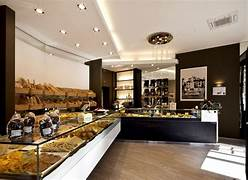
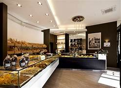

Il Panificio delle Donne è più di un semplice panificio: è un luogo dove la tradizione incontra l'innovazione. Ogni giorno sforniamo pane fresco, dolci artigianali e prodotti unici, realizzati con ingredienti di prima qualità e tanta passione.

Benvenuti al Panificio delle Donne! Prodotti freschi e artigianali, preparati con amore e cura.
Il Panificio delle Donne è più di un semplice panificio: è un luogo dove la tradizione incontra l'innovazione. Ogni giorno sforniamo pane fresco, dolci artigianali e prodotti unici, realizzati con ingredienti di prima qualità e tanta passione.
